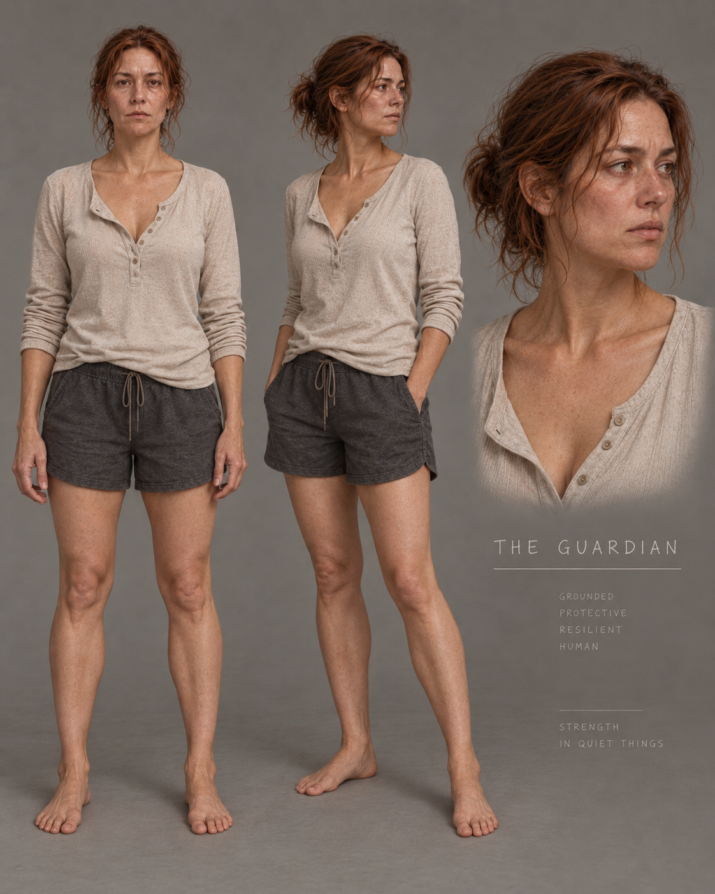

SPHIRUS · 3 Kasım 2026 · Kıyafet kalıbı ve teknik inceleme
Bel oturuşu iyileşti.
Göğüs işçiliği ve dinamik döküm tamamlanmadı.
PARTIAL / REVIEW_REQUIRED · ARTIST-GRADE: NO
Kalıp ve materyal düzeltmeleri ayrı C48 adaylarına kaydedildi. Ana oyuncu karakterinin üretim referansları değiştirilmedi. Beden, SHCB, skeleton, yüz, saç ve mevcut üretim kıyafetlerini kapsayan 51 dosyanın özeti başlangıçla aynı. Sonuç, kullanıcının istediği tamamlanmış kaliteli kumaş görünümüne henüz ulaşmıyor.
En güçlü kazanım arka bel ve üst kalça birleşimi. Göğüsteki ilave kumaş payı seçilen koşu pozundaki belirgin beden taşmasını kapatıyor; fakat göğüs altında sert kalıp hissi, köşeli yaka/pat ve hareket sırasında sıkışan kıvrımlar kalıyor. Bu nedenle aday üretime bağlanmadı.
Aynı kamera, poz ve ışık
Gerçek oyuncu pawn’ı, mevcut beden retarget ve postprocess zinciriyle görüntülendi. 1600 × 1600; tam vücut FOV 31°, detay FOV 21°; sabit manuel pozlama −1,2; 6500 K; bloom ve motion blur kapalı. Sayısal kamera ve beden pozu eşitliği 10 çift için kontrol edildi. Görüntülerde rötuş veya renk düzenlemesi yapılmadı.
ÖNCE · üretimdeki kıyafet SONRA · A4 aday + yeni materyal
SONRA · A4 aday + yeni materyal
Göğüs karşılaştırma paftası · Bel karşılaştırma paftası · Tam vücut paftası
Hareket kaydı
Yaklaşık 18 saniye: duruş, yürüyüş, koşu, dönüş, eğilme ve kol hareketi. Mevcut animasyon klipleri gerçek pawn üzerinde kontrollü oynatıldı. Bu, klavye/gamepad ile serbest oynanış veya çalışan kumaş simülasyonu kanıtı değildir. Kamera her klipte eşleşir; bağımsız kayıtlarda küçük faz farkları vardır.
Önce kaydı · Sonra kaydı · İncelenen hareket örnekleri · Çömelme dahil seçilmiş pozlar
Gerçek oyun kamerası
L_GR_SphirusHouse, mevcut ışık ve kamera, aynı sabit poz; FOV 60°. Kamera konumu ve açısı iki çekimde aynı. Arka beldeki raf görünümünün azalması oyun mesafesinde de okunuyor. Serbest hareket, LOD ve performans kabulü bu görüntülerden çıkarılamaz.
Kaynak → düzeltme → kalan iş
| Bölge | Görsel bulgu | Neden | Uygulanan düzeltme | Son durum |
|---|
| Göğüs / kalıp | Göğüs altına fazla yapışan, her hacmi ayrı izleyen geçiş; koşu fazında bedenin kumaştan çıkması. | Sorun malzemeden önce geometride ve deformasyon payında. Simülasyon kapalı karşılaştırma da form sorununu koruyor. | Göğüs–kaburga geçişi yumuşatıldı; ön panele en fazla 1,45 cm ek hareket payı verildi. Örnek koşu pozundaki belirgin taşma kapandı. | PARTIAL: göğüs ortasındaki gerilim ve ayrı kalıp hissi sürüyor. |
| Bel / kalça üstü | Arka belde keskin çöküntüler, üst üste katlanmış sert bir etek bandı ve raf görünümü. | Eski idle pozunda yerleşmiş kalıp ve 7 mm dışa açılan etek ofseti. Görünüm, aktif kumaş hareketinin ürünü değil. | Gerçek oyuncu pozunda arka bel geçişi yeniden düzenlendi; küçük keskin katlar yumuşatıldı, etek bandının çıkıntısı azaltıldı. Anatomi değiştirilmedi. | PARTIAL: belirgin iyileşme; yakın planda etek ve yan dikiş işçiliği yeniden ele alınmalı. |
| Deformasyon | Koşu, kol hareketi ve koltuk altında aşırı sıkışan kıvrımlar. | Kıyafet kemik ağırlıkları ve geometrisi mevcut beden hareketini tam karşılamıyor. Eski düzeltici şekiller yeni kalıba yeniden uyarlanmış değil. | Mevcut ağırlıklar ve skeleton korundu; geometriye hareket payı eklendi. Yürüyüş, koşu, duruş, dönüş, eğilme, kol hareketi ve çömelme örnekleri incelendi. | PARTIAL: tam hareket aralığı ve düzeltici deformasyonlar tamamlanmadı. |
| Kumaş / materyal | Fazla iri, sert örgü ayrıntısı; gövdeye paralel tekrarlayan yapay izler. | Detay normalinin yüksek şiddeti, kaba normal ve mevcut UV/yüzey örüntüsü. | 180 g/m² sınıfı pamuk–modal jersey hedeflendi. Ana detay normal şiddeti 0,85 → 0,28; yaklaşık ilmek aralığı 0,9 → 0,66 mm. Kaba normal 0,35 katsayısına indirildi, yansıma yumuşatıldı. Şorta da ayrı materyal adayları üretildi. | PARTIAL: yeni özgün tekstil bake’i, yaka/pat kalınlığı ve dikiş işçiliği eksik. |
| Chaos / teknik | Simülasyon açık görünmesine rağmen aç/kapa kıyaslarında bağımsız döküm oluşmuyor. | Mevcut StaticMeshImport bölüm yolunda Geometry Script ağırlık haritası taşınmıyor. MaxDistance alt değeri sıfır ve harita kayıp; kıyafet fiilen kemik deformasyonu izliyor. | Kaynak kodu ve runtime özellikleri denetlendi. Ayrı adaylarda fizik ayarı denendi; etkisiz sonuç kabul edilmedi. | FAIL: ağırlık haritası aktarımı ve gerçek kumaş simülasyonu onarılmadı. Python/Dataflow okuma denemesi editörü çökertti; üretim asset’i değiştirilmedi. |
Tasarım ve kumaş hedefi
Onaylı Guardian konsepti: bedene yakın fakat rahat, yulaf/grej Henley, açık yaka ve düğme şeridi, yüksek kalça seviyesinde yumuşak etek; koyu, rahat şort. Ana hedef yumuşak pamuk–modal jersey: omuzdan taşınan yüzey, göğüs altında yumuşak geçiş, belde birkaç nedenli kıvrım ve temiz alanlar. Elde edilen adayda temiz alan arttı; doğal birincil/ikincil kıvrım hiyerarşisi ve gerçek dikilmiş kenar işçiliği henüz yeterli değil.

Projede bulunan onaylı konsept
Kumaş ve kesim referansları: 180 g/m² pamuk–modal jersey, jersey Henley, ince rib Henley, yulaf renkli uzun kollu Henley. 180 g/m² bir sanat yönü hedefidir; etkin simülasyonda ölçülmüş kumaş ağırlığı olarak sunulmamaktadır.
Görsel kabul ve teknik doğrulama
| Sanat değerlendirmesi | Karar |
|---|
| HENLEY/TOP SILHOUETTE | PARTIAL |
| TOP CONSTRUCTION | FAIL |
| TOP MATERIAL | PARTIAL |
| BOTTOM SILHOUETTE | PARTIAL |
| BOTTOM CONSTRUCTION | PARTIAL |
| BOTTOM MATERIAL | PARTIAL |
| GARMENT DRAPE | PARTIAL |
| CHARACTER MATERIAL COHERENCE | PARTIAL |
| CONCEPT ART-DIRECTION MATCH | PARTIAL |
| HERO CHARACTER QUALITY | FAIL |
| ARTIST-GRADE | NO |
| Teknik kontrol | Karar |
|---|
| Protected body/SHCB/skeleton/face/groom and production assets | PASS: 51 file hashes unchanged |
| Matched still camera and body pose | PASS: 10 pairs, numeric camera/FOV/pose equality |
| Garment source topology | PASS: unchanged 8075 vertices / 14877 triangles; existing welded Chaos path reused |
| Staged motion review | PARTIAL: six sequences plus selected crouch/deformation poses |
| Real gameplay camera | PASS for matched static comparison only |
| Dynamic garment behavior | FAIL: MaxDistance import unresolved |
| High-elevation shoulder and full-range extreme poses | NOT_TESTED |
| Garment LOD 0/1/2 and sync | NOT_TESTED |
| Measured GPU/RHI/streaming/performance | NOT_TESTED |
| Keyboard/gamepad free gameplay | NOT_TESTED |
| Saved final candidate | PASS |
| Reopen after final save | PASS: clean editor session; candidate, graph, mesh, collider and final materials loaded; no temporary stage actors |
Saç, ten ve yüz bu geçişte değiştirilmedi; bunlara yeni bir görsel kabul verilmedi. Kıyafet yakın planda hâlâ prosedürel bir prototip izi taşıyor. Göğüs önü, pat/yaka, koltuk altı ve etek dikişi sanatçı işçiliği gerektiriyor.
Devam edilebilir teslim
- Unreal adayı:
/Game/Sphirus/CharacterLab/CostumeFit_20261103/Cloth/CA_C48_Henley_a4. Son Henley materyalleri bu asset’e kaydedildi. Üretim Blueprint’i bu adaya yönlendirilmedi. - Materyaller: aynı kökte
Materials/MI_C48_Henley_0..2, MI_C48_Shorts_0..2, M_C48_Textile_B. Şort geometrisi değiştirilmedi. - Yerel Blender çalışma dosyası (bu GitHub rapor paketine dahil değil): yeni bind mesh, orijinal karşılaştırma şekli, kemik ağırlık grupları, UV, idle karşılaştırma mesh’leri ve seçilemeyen beden referansı. Beden referansı önbellekteki LBS verisidir; canlı SHCB doğrulamasının yerine geçmez.
- Yapılandırılmış rapor · 51 dosyanın koruma kontrolü · Son aday bilgisi. Geri dönüş kopyaları
Saved/Codex/SHME_V233_20261027/checkpoint/manifests/costume48_* altında.
En değerli sonraki düzeltme: göğüs önü–pat–yaka bağlantısını sürekli dikilmiş panel olarak yeniden işlemek; ardından kıyafete ait düzeltici deformasyonları yeni kalıba uyarlamak ve Chaos MaxDistance aktarımını onarmak. Mevcut Python/Dataflow arayüzüyle güvenilir ağırlık haritası aktarımı tamamlanamadı. Dinamik döküm, LOD ve performans doğrulanmadan bu aday bitmiş sayılmamalı.